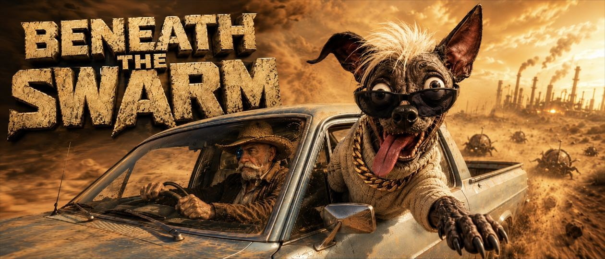
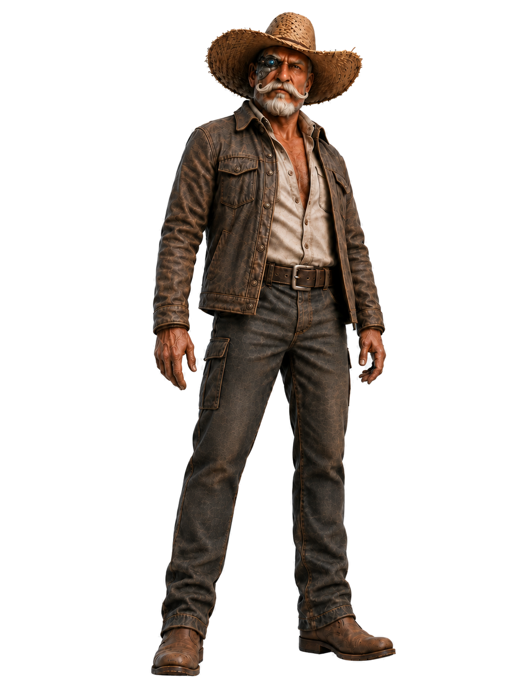
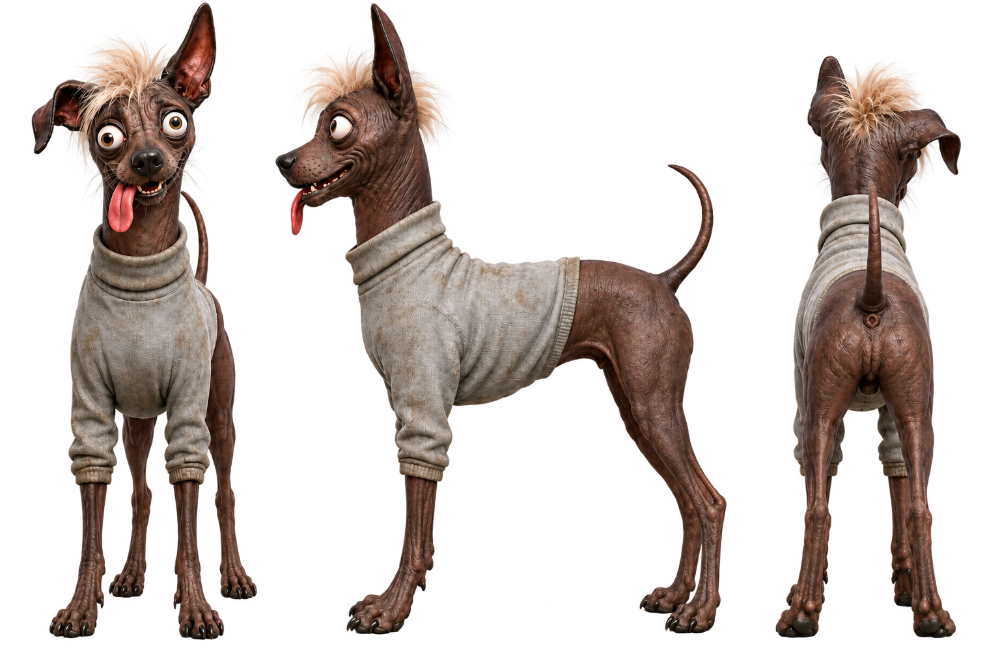
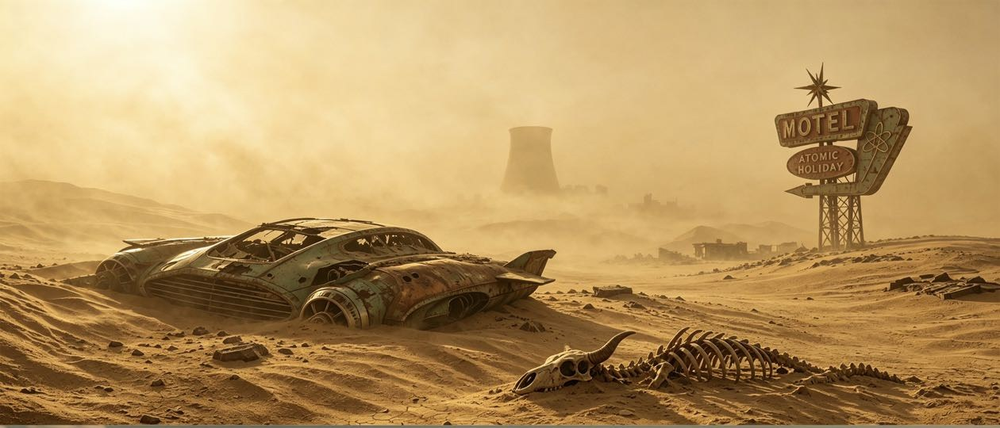
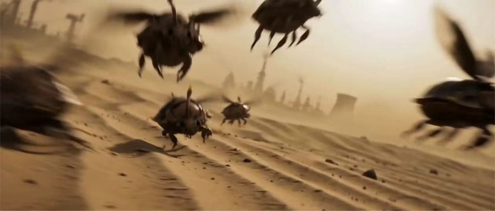
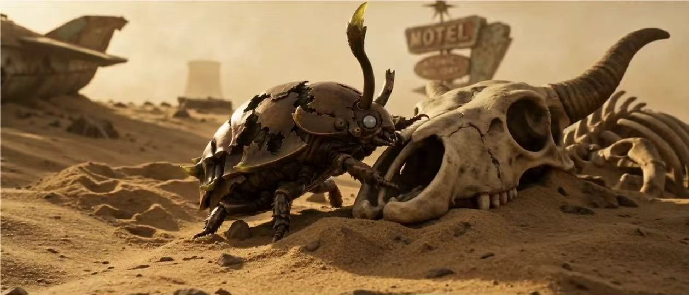
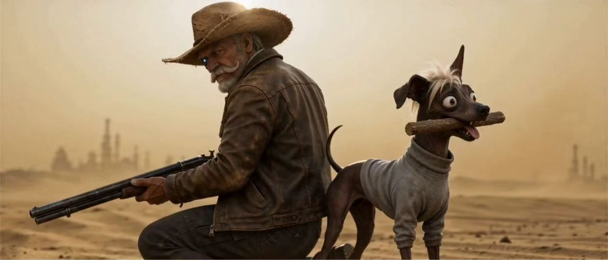
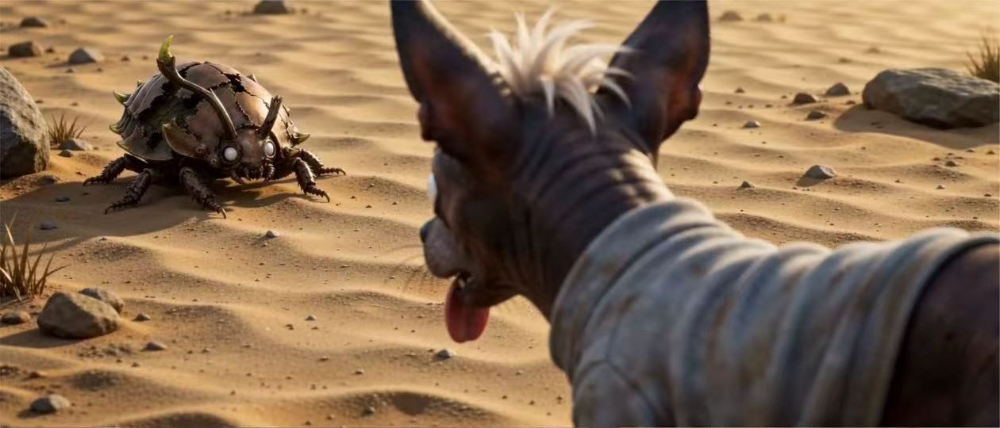
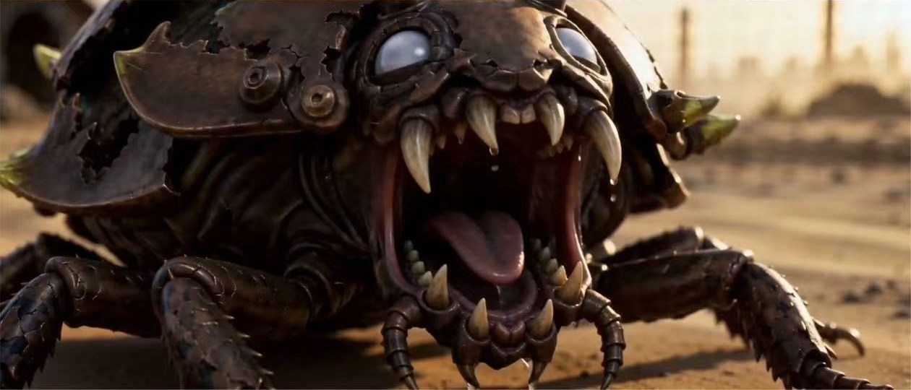
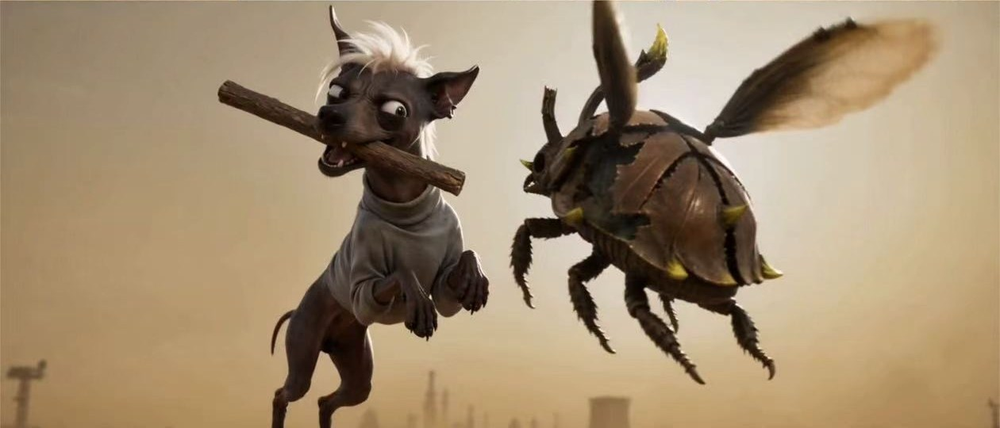

01 / AIGC FILM
虫潮之下
荒原里习以为常的一场虫潮，因为甲虫体内那枚不该存在的电子元件，露出另一重真相。
- 剧本
- 角色设计
- 分镜与剪辑
- AI 影像
AI ANIMATION

AIGC 动画短片 · 2026
荒原里习以为常的一场虫潮，因为甲虫体内那枚不该存在的电子元件，露出另一重真相。
品牌系统 · 空间导视
以留白、光影和缓慢节奏，塑造介于城市与自然之间的居住体验。
视觉识别 · 动态设计
让字体、声音与图像在同一节奏中变化，形成可以被感知的动态展览身份。
数字产品 · 编辑设计
将每周灵感整理成轻量、清晰的数字阅读体验，让内容本身成为界面。
BAI YUPENG / 2026虫潮之下
BENEATH THE SWARM
末世后的沙漠里，城市只剩被风沙吞没的残骸。主角与他的狗守着一间荒无人烟的木屋，以应付丧尸虫潮为日常。直到一次战斗后，他们在甲虫体内发现高科技电子物品——这场虫灾，也许从来不是自然发生。
CHARACTER DOSSIER / 角色档案
角色轮廓一硬一软：主角稳重克制，狗则承担警觉与喜剧节奏。两者在同一画面里形成清晰的性格反差。

机械义眼记录荒原里的每一次异动。寡言、老练，对虫潮的处理近乎机械化；当甲虫内部出现电子元件，他第一次意识到熟悉的生存规则正在失效。

反应比主人更快，表情也更诚实。它既是最灵敏的预警器，也是紧张叙事中的轻松节拍；面对虫群时，夸张外表下藏着毫不迟疑的勇气。
WORLD BUILDING / 世界观
低饱和沙金色贯穿全片。汽车残骸、废弃旅馆与木屋构成生存空间；生物外壳与精密电子的并置，则把故事从“灾难”推向“阴谋”。



FROM SCRIPT TO SCREEN / 制作路径
先建立“平静—虫潮—反击—线索”的四段式叙事。
固定人物、狗、虫体与废土环境的造型和色彩规则。
围绕景别、动作方向和光线连续性生成可衔接镜头。
通过剪辑、配乐与音效，补足冲击感和黑色幽默节奏。
IMAGE 2 · MIDJOURNEY NIJI 8 · NANO BANANA 2 · SEEDANCE 2.0 · SUNO 5




点击空白处返回
AI DESIGNER · MOTION · INTERACTION
用视觉、动画与 AI 工具搭建内容体验，在技术与审美之间寻找准确、鲜明的表达。
04 PROJECT EXPERIENCE
个人全流程制作，负责剧本、美术资产、分镜、配乐、剪辑与制片；使用 Image 2、Midjourney Niji 8、Nano Banana 2、Seedance 2.0、Suno 5 完成。
个人全流程制作，负责剧本、美术资产、分镜、音效、剪辑与制片；使用 Image 2、Nano Banana 2、Seedance 2.0 完成。
05 INTERNSHIP EXPERIENCE
06 EVALUATION
情绪稳定，抗压能力强；思维活跃、条理清晰、学习能力强，拥抱新技术。创新意识与团队意识强，善于解决问题，能够快速理解需求并推动落地。
按住鼠标左键拖动 · 使用 ＋ / − 或 Ctrl + 滚轮缩放